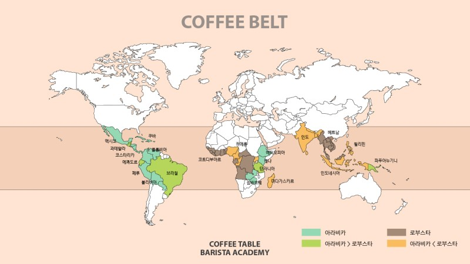
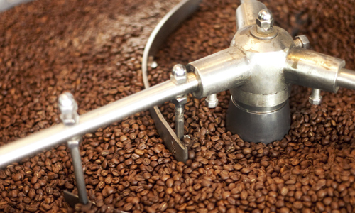
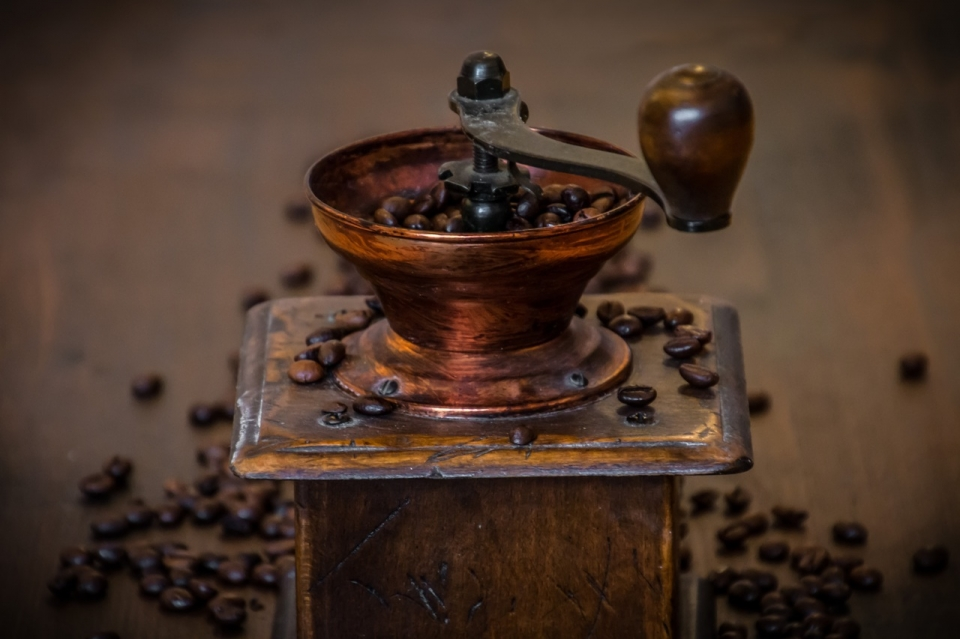

커피는 적도를 중심으로 북위 25도~남위 25도 지역에서 주로 생산됩니다.
사람들은 이 지역을 커피 벨트(Coffee Belt) 또는 커피 존(Coffee Zone)이라고 부릅니다.
평균 기온은 섭씨 15~24도, 일교차가 19도가 넘지 않고, 습도는 60%~75% 사이가 커피 재배에 좋습니다.
커피를 재배하는 토양은 약산성(ph 5-6)에 지형이 20도 정도 기울어져 있고, 연간 강우량은 1400~3000mm, 바람이 적고 일조 시간이 2200~2400시간 정도인 것이 적당합니다.
또한 재배 지역의 고도가 높을수록 커피 열매의 밀도가 높아져 맛과 향이 풍부해진다는 것이 커피 재배의 핵심입니다.
커피의 대표적인 품종은 '아라비카'와 '로부스타' 두 가지가 있습니다.
'아라비카'(Arabica)는 해발 고도 800m 이상의 고산지에서 생산되며, 전 세계 생산량의 60%를 차지하는 품종입니다. 주로 원두 커피를 만드는 데 쓰이는 품종으로, 맛이 균일하며 부드럽고 특유의 신맛이 특징입니다.
고산지에서 재배되는 것은 맛과 향의 밀도를 높이기 위해서이며, 고급 아라비카 품종으로는 콜롬비아산 아라비카가 손꼽히고 있습니다.
'로부스타'(Robusta)는 해발 고도 600m 이하에서 생산되며, 병충해에 강한 것이 특징입니다. 커피믹스, 커피 향 제품, 커피 원료 제품 등 다양한 곳에 쓰이며, 아라비카에 비해 맛과 향은 떨어지지만 아라비카 커피 이상의
높은 값을 요구하는 제품들도 있습니다. 카페인 함량이 아라비카에 비해 2배 정도 높은 것도 특징입니다.
커피 열매는 다 익으면 붉은 껍질입니다. 우리가 커피를 만드는 데 쓰는 커피 원두는 그 안에 들어있는 씨앗입니다.
커피 가공법에는 '건식 가공'과 '수세식 가공'이 있습니다.
건식(Natural) 가공은 말 그대로 말려서 과육을 떼어내는 것입니다.
커피 열매를 널어 말린 뒤 마른 과육을 맷돌이나 절구 등을 이용하여 껍질을 벗겨내는 방식으로,물이 귀한 중동 지역에서 유래되었습니다.
말리는 과정 중 특유의 다크초콜릿과 견과류같은 풍미가 생기며 수세식 가공 원두에 비해 자연적인 단맛이 유지되므로 단맛이 은은하게 나서 이러한 풍미를 배가시킵니다.
일부 지역에서는 아예 커피 열매가 나무에 달린 채로 마를 때까지 놔뒀다가 따서 가공하기도 하는데, 이런 경우 열매가 무르익어서 고유의 단맛이 더욱 강해진다고 합니다.
수세식(Washed) 가공은 커피 열매를 물에 담가두어 과육이 불어서 떨어지면 씻어내어 가공하는 것입니다.
비교적 물이 풍부한 에티오피아 남부나 케냐에서 유래되었으며, 물에 담가두는 중 일종의 발효 작용이 발생하여 독특한 신맛과 복합적인 과일향이 생겨납니다.
지역에 따라 가공 방법이 조금씩 다른데, 씻어낸 뒤 바로 햇볕에 말리는 것이 기본이나 한 번 씻어낸 뒤 그 물에 다시 일정 기간 담가두어 2차 발효를 유도한 뒤 말리는 곳도 있습니다.
수용성인 카페인이 물에 녹아서 어느 정도 빠지기 때문에 카페인 함량이 건식 가공에 비해 낮다고 합니다.
가공을 마친 커피 원두는 수 년 동안 변질 없이 보관할 수 있는 상태가 됩니다.
하지만 우리가 아는 커피 원두의 모습과 향, 맛을 내기 위해서는 커피를 볶아야 합니다. 이를 로스팅, 또는 배전이라고 부릅니다.
커피는 어떻게 볶느냐에 따라 그 맛과 향이 매우 다양해지기 때문에 그 중요성은 아주 큽니다.
커피를 볶는 방법은 크게 다음과 같은 종류로 나누어집니다.
커피를 볶을 때 200 - 230 도의 온도에서 길어야 30분 이내에 볶아야 합니다.
지나치게 높은 온도에서 볶으면 생두의 내부가 물리, 화학적 변화를 거치기 전에 외부가 먼저 타버리게 됩니다.
지나치게 낮은 온도에서 오래 볶을 경우에는 커피 특유의 향기가 생기지 않습니다. 향은 휘발성 물질이기 때문에 열에 오랫동안 노출될 경우 날아가 버리기 때문입니다.
따라서 볶을 때는 가능한 짧은 시간 안에 적당한 온도에서 볶기를 마쳐야 합니다.
또한, 볶은 커피는 볶지 않은 커피와는 다르게 공기 중 산소에 의해 산패되고 향을 잃어버리기 때문에 오랫동안 보관할 수 없습니다.
길어야 한 달, 짧으면 10일 이내에 맛과 향이 날아가버리기 때문에 그 전에 모두 사용하는 것이 좋습니다.
보관할 때는 향이 날아가지 않게 밀폐 용기에, 20도 이하의 직사광선이 들지 않는 곳에 보관하는 것이 좋습니다.
커피원두는 품종과 배전 정도에 따라 서로 다른 맛의 향의 특성을 나타내기 때문에, 커피의 특성과 소비자의 취향에 맞도록 원두들을 알맞게 배합해야 합니다.
커피 원두들의 서로 다른 향미 성분들 사이에 균형을 이루어 커피의 질을 향상시키고, 그 질을 변함없이 지속시키기 위해 주로 이루어집니다.
최근에는 배합에 대한 관심이 높아져 배합의 좋고 나쁨으로 제품을 측정하기도 합니다.
주로 선호되는 배합은 다음과 같습니다.
1.일반적인 배합
브라질(40%), 모카(30%), 콜롬비아(30%)
2.신맛이 강한 배합
콜롬비아(40%), 모카(30%), 브라질(20%), 멕시코(20%)
3.쓴맛이 강한 배합
콜롬비아(30%), 브라질(30%), 모카(20%), 만델링(20%)
커피가루의 분쇄 정도는 추출속도에 영향을 끼칩니다.
곱게 분쇄할수록 뜨거운 물과 닿는 접촉면적이 넓기 때문에 맛이 빨리 우러나오고, 굵을수록 시간이 걸립니다.
또한 커피가루의 크기는 추출 커피의 농도를 좌우합니다.
만약 추출된 커피가 진하면, 중간크기의 가루와 굵게 분쇄한 가루를 알맞게 배합하여 농도를 조절합니다.
너무 미세한 커피가루를 쓰면 추출 커피에 미립자가 섞이게 되어 이물감이 생기게 됩니다.
반대로 굵은 가루를 쓰면 추출 시간이 짧아 유효성분을 재대로 뽑아 낼 수 없기에 주의해야 합니다.
또한 커피의 향을 잃지 않으려면 추출할 때마다 분쇄하여 쓰는 것이 좋습니다.
분쇄한 커피가루는 배전 원두보다 더 빨리 향미가 변하기 쉽기 때문입니다.
커피를 분쇄하는 기구는 여러가지가 있는데, 각 기구에 따른 분쇄 정도와 분쇄 시간을 소개해드립니다.
| 기구 종류 | 분쇄 정도 | 입자 크기 | 분쇄 시간 |
| 에스프레소식 | 가는분쇄 | 0.5㎜ | 1-3분 |
| 사이폰식, 커피메이커 | 약간가는분쇄 | 0.6㎜ | 4-6분 |
| 드립식, 전자동 커피메이커 | 중간분쇄 | 0.7㎜ | 4-6분 |
| 피콜레이터식 | 거친분쇄 | 0.9㎜ | 4-6분 |
앞서 설명했던 원두 종류, 가공볶기, 배합, 분쇄만큼 커피 추출법도 맛에 큰 영향을 미칩니다.
커피의 맛과 향에 영향을 미치는 추출 조건은 첫째가 추출시간과 온도이고, 그밖에 볶은 정도, 배합 여부, 추출기구의 금속성도 영향을 미칩니다.
커피의 추출의 핵심은 커피가루의 조직에 물을 침투시켜 그 조직 속에 함유된 가용성분중 카페인(caffeine)과 타닌 (tannin)을 적당하게 뽑아내는 것에 있습니다.
적절한 커피 추출 온도와 추출 시간은 커피의 맛과 향을 좌우하고, 커피의 볶은 정도는 커피의 추출 시간에 영향을 주며, 배합은 커피의 깔끔함에 영향을 끼칩니다.
추출기구는 철분이 쓰이지 않은 것이 좋은데, 물이 철분과 만나면 타닌을 잘 용해시키지 못하고 위장 수축에도 영향을 주기 때문입니다.
대표적인 커피 추출 방법은 다음과 같습니다.